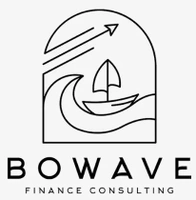
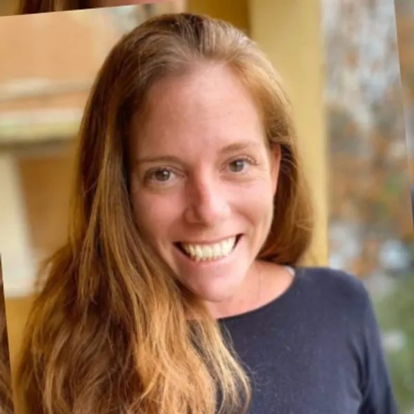

ייעוץ FP&A · תקציב · תחזיות · ליווי לגיוס
שיחה ראשונה, בלי התחייבות

מיטל לוימומחית FP&A
כ-20 שנות ניסיון ב-FP&A בחברות טכנולוגיה. בניית תשתית פיננסית מאפס, ליווי גיוסים, מיזוגים ורכישות (כולל רכישת HiredScore על ידי Workday), אפיון והטמעת מערכות פיננסיות, ושילוב כלי AI מתקדמים בעבודה השוטפת.
בחרו את הקטגוריה שמתאימה לכם. אני עובדת עם חברות בכל שלב.
ליווי FP&A לסמנכ"לי כספים, מנהלי כספים וצוותי פיננסים. תמיכה מקצועית בעבודה השוטפת, בליווי קבוע או על בסיס פרויקט, בהתאמה לצרכים שלכם.
אני בונה איתכם תשתית פיננסית מאפס, מתוכנית עסקית ועד מצגת משקיעים שמגייסת.
פיננסים שעובדים בקצב שלכם, לא להפך.
הובלתי FP&A בחברות מגיוס ראשוני ועד רכישה, כולל רכישת HiredScore על ידי Workday.
אני מעורבת בעסק שלכם ומתרגמת מספרים להחלטות שמניעות צמיחה.
שעות ייעוץ, פרויקט, ריטיינר או התאמה אישית. אני מתאימה את ההתקשרות לצרכים שלכם.
כלים מודרניים, אוטומציה ותהליכי עבודה חכמים. תוצאות טובות יותר בפחות זמן.
שיחת ייעוץ ראשונה. להבין את הצרכים שלכם ולראות אם יש התאמה.
📅 תאמו שיחה עכשיו או בקרו באתר הראשי שלנו →